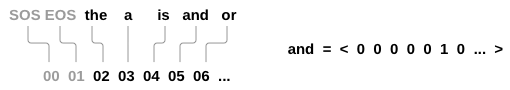

用基于注意力机制的seq2seq神经网络进行翻译
作者: Sean Robertson
这个教程主要讲解用一个神经网络将法语翻译成英语.
[KEY: > input, = target, < output]
> il est en train de peindre un tableau .
= he is painting a picture .
< he is painting a picture .
> pourquoi ne pas essayer ce vin delicieux ?
= why not try that delicious wine ?
< why not try that delicious wine ?
> elle n est pas poete mais romanciere .
= she is not a poet but a novelist .
< she not not a poet but a novelist .
> vous etes trop maigre .
= you re too skinny .
< you re all alone .… 取得不同阶段的成功.
这是通过seq2seq网络 <[http://arxiv.org/abs/1409.3215](http://arxiv.org/abs/1409.3215)>__实现的简单却强大的想法, 通过两个递归神经网络一起工作实现将一个序列转换为另一个.一个编码器网络将输入序列压 缩成向量,解码器网络将该矢量展开为新的序列.

为了改进这个模型,我们将使用一种注意力机制<[https://arxiv.org/abs/1409.0473](https://arxiv.org/abs/1409.0473)>__, 它可以让解码器学习将注意力集中在输入序列的特定范围上.
推荐阅读:
我们假设你至少已经安装了PyTorch,了解Python,并且了解张量:
- http://pytorch.org/ PyTorch安装说明
- PyTorch 深度学习: 60 分钟极速入门教程 开始使用PyTorch
- 跟着例子学习 PyTorch 进行广泛而深入的了解
- PyTorch for former Torch users 如果你是前Lua Torch用户
这些内容也有利于了解seq2seq网络和其工作机制:
你还可以找到以前的教程关于Character-Level RNN名称分类 用字符级RNN分类名称 和生成名称 基与字符级RNN（Char-RNN）的人名生成 这些概念与编码器和解码器模型非常相似.
更多内容请阅读介绍这些主题的论文:
要求
from __future__ import unicode_literals, print_function, division
from io import open
import unicodedata
import string
import re
import random
import torch
import torch.nn as nn
from torch.autograd import Variable
from torch import optim
import torch.nn.functional as F
use_cuda = torch.cuda.is_available()加载数据文件
这个项目的数据是一组数以千计的英语到法语的翻译对.
[](#id2)这个问题在 Open Data Stack Exchange上 <[http://opendata.stackexchange.com/questions/3888/dataset-of-sentences-translated-into-many-languages](http://opendata.stackexchange.com/questions/3888/dataset-of-sentences-translated-into-many-languages)>__
指导我们使用开放的翻译网站 http://tatoeba.org/ 可下载地址为 http://tatoeba.org/eng/downloads - 更好的是, 有人做了额外的工作,切分语言对到单个文本文件中: http://www.manythings.org/anki/
英文到法文对太大而不能包含在repo中,因此开始前请下载 data/eng-fra.txt. 该文件是一个制表符分隔的翻译对列表: :
I am cold. Je suis froid.Note
下载数据文件在 这里 并解压到正确的路径.
与character-level RNN教程中使用的字符编码类似,我们将用语言中的每个单词 作为独热向量,或者除了单个单词之外(在单词的索引处)的大的零向量. 相较于可能 存在于一种语言中仅有十个字符相比,多数都是有大量的字,因此编码向量很大. 然而,我们会欺骗性的做一些数据修剪,保证每种语言只使用几千字.
我们需要每个单词对应唯一的索引作为稍后的网络输入和目标.为了追踪这些索引我们使用一个帮助类 Lang 类中有 词 → 索引 (word2index) 和 索引 → 词
(index2word) 的字典, 以及每个词word2count 用来替换稀疏词汇.
SOS_token = 0
EOS_token = 1
class Lang:
def __init__(self, name):
self.name = name
self.word2index = {}
self.word2count = {}
self.index2word = {0: "SOS", 1: "EOS"}
self.n_words = 2 # Count SOS and EOS
def addSentence(self, sentence):
for word in sentence.split(' '):
self.addWord(word)
def addWord(self, word):
if word not in self.word2index:
self.word2index[word] = self.n_words
self.word2count[word] = 1
self.index2word[self.n_words] = word
self.n_words += 1
else:
self.word2count[word] += 1这些文件全部采用Unicode编码,为了简化我们将Unicode字符转换为ASCII, 使所有内容小写,并修剪大部分标点符号.
# 感谢您将Unicode字符串转换为纯ASCII
# http://stackoverflow.com/a/518232/2809427
def unicodeToAscii(s):
return ''.join(
c for c in unicodedata.normalize('NFD', s)
if unicodedata.category(c) != 'Mn'
)
# 小写,修剪和删除非字母字符
def normalizeString(s):
s = unicodeToAscii(s.lower().strip())
s = re.sub(r"([.!?])", r" \1", s)
s = re.sub(r"[^a-zA-Z.!?]+", r" ", s)
return s要读取数据文件,我们将把文件分成行,然后将行成对分开. 这些文件都是英文→其他语言,所以如果我们想从其他语言翻译→英文,我们添加了 翻转标志 [](#id5)reverse来翻转词语对.
def readLangs(lang1, lang2, reverse=False):
print("Reading lines...")
# 读取文件并按行分开
lines = open('data/%s-%s.txt' % (lang1, lang2), encoding='utf-8').\
read().strip().split('\n')
# 将每一行分成两列并进行标准化
pairs = [[normalizeString(s) for s in l.split('\t')] for l in lines]
# 翻转对,Lang实例化
if reverse:
pairs = [list(reversed(p)) for p in pairs]
input_lang = Lang(lang2)
output_lang = Lang(lang1)
else:
input_lang = Lang(lang1)
output_lang = Lang(lang2)
return input_lang, output_lang, pairs由于有很多例句,我们希望快速训练,我们会将数据集裁剪为相对简短的句子. 这里的单词的最大长度是10词(包括结束标点符号),我们正在过滤到翻译 成”I am”或”He is”等形式的句子.(考虑到先前替换了撇号).
MAX_LENGTH = 10
eng_prefixes = (
"i am ", "i m ",
"he is", "he s ",
"she is", "she s",
"you are", "you re ",
"we are", "we re ",
"they are", "they re "
)
def filterPair(p):
return len(p[0].split(' ')) < MAX_LENGTH and \
len(p[1].split(' ')) < MAX_LENGTH and \
p[1].startswith(eng_prefixes)
def filterPairs(pairs):
return [pair for pair in pairs if filterPair(pair)]完整的准备数据的过程:
- 加载文本文件切分成行,并切分成单词对:
- 文本归一化, 按照长度和内容过滤
- 从成对的句子中制作单词列表
def prepareData(lang1, lang2, reverse=False):
input_lang, output_lang, pairs = readLangs(lang1, lang2, reverse)
print("Read %s sentence pairs" % len(pairs))
pairs = filterPairs(pairs)
print("Trimmed to %s sentence pairs" % len(pairs))
print("Counting words...")
for pair in pairs:
input_lang.addSentence(pair[0])
output_lang.addSentence(pair[1])
print("Counted words:")
print(input_lang.name, input_lang.n_words)
print(output_lang.name, output_lang.n_words)
return input_lang, output_lang, pairs
input_lang, output_lang, pairs = prepareData('eng', 'fra', True)
print(random.choice(pairs))Seq2Seq模型
递归神经网络(RNN),是一个按照一个序列进行操作的网路,并 将其自己的输出用作后续步骤的输入.
一个 序列到序列网络, 或 seq2seq 网络, 或 编码解码器网络, 是由两个称为编码器和解码器的RNN组成的模型. 编码器读取输入序列并输出单个向量, 解码器读取该向量以产生输出序列.
与单个RNN的序列预测不同,每个输入对应一个输出, seq2seq模型将我们从序列长度和顺序中解放出来, 这使得它成为两种语言之间翻译的理想选择.
考虑这句话 “Je ne suis pas le chat noir” → “I am not the black cat”. 输入句子中的大部分单词在输出句子中有直接翻译, 但顺序略有不同,例如: “chat noir” 和 “black cat”. 由于 “ne/pas”结构, 其中另一个单词在输入的句子中. 直接从输入词的序列中直接生成正确的翻译是很困难的.
使用seq2seq模型,编码器会创建一个单独的向量, 在理想情况下,它将输入序列的”含义”编码为单个向量 - 句子的N维空间中的一个点.
编码器
seq2seq网络的编码器是一个RNN,它为输入句子中的每个单词输出一些值. 对于每个输入字,编码器输出一个向量和一个隐藏状态,并将隐藏状态用于下一个输入字.

class EncoderRNN(nn.Module):
def __init__(self, input_size, hidden_size):
super(EncoderRNN, self).__init__()
self.hidden_size = hidden_size
self.embedding = nn.Embedding(input_size, hidden_size)
self.gru = nn.GRU(hidden_size, hidden_size)
def forward(self, input, hidden):
embedded = self.embedding(input).view(1, 1, -1)
output = embedded
output, hidden = self.gru(output, hidden)
return output, hidden
def initHidden(self):
result = Variable(torch.zeros(1, 1, self.hidden_size))
if use_cuda:
return result.cuda()
else:
return result解码器
解码器是另一个RNN,它接收编码器输出向量并输出一个单词序列来创建翻译.
简单的解码器
在最简单的seq2seq解码器中,我们只使用编码器的最后一个输出. 这个最后的输出有时称为上下文向量,因为它从整个序列编码上下文. 该上下文向量被用作解码器的初始隐藏状态.
在解码的每一步,解码器都被赋予一个输入指令和隐藏状态. 初始输入指令字符串开始的<SOS>指令,第一个隐藏状态是上下文向量(编码器的最后隐藏状态).

class DecoderRNN(nn.Module):
def __init__(self, hidden_size, output_size):
super(DecoderRNN, self).__init__()
self.hidden_size = hidden_size
self.embedding = nn.Embedding(output_size, hidden_size)
self.gru = nn.GRU(hidden_size, hidden_size)
self.out = nn.Linear(hidden_size, output_size)
self.softmax = nn.LogSoftmax(dim=1)
def forward(self, input, hidden):
output = self.embedding(input).view(1, 1, -1)
output = F.relu(output)
output, hidden = self.gru(output, hidden)
output = self.softmax(self.out(output[0]))
return output, hidden
def initHidden(self):
result = Variable(torch.zeros(1, 1, self.hidden_size))
if use_cuda:
return result.cuda()
else:
return result我们鼓励你训练和观察这个模型的结果,但为了节省空间,我们将直接进正题引入注意力机制.
注意力解码器
如果仅在编码器和解码器之间传递上下文向量,则该单个向量承担编码整个句子的负担.
注意力允许解码器网络针对解码器自身输出的每一步”聚焦”编码器输出的不同部分. 首先我们计算一组注意力权重. 这些将被乘以编码器输出矢量获得加权的组合. 结果(在代码中为attn_applied) 应该包含关于输入序列的特定部分的信息, 从而帮助解码器选择正确的输出单词.

使用解码器的输入和隐藏状态作为输入,利用另一个前馈层 [](#id12)attn计算注意力权重, 由于训练数据中有各种大小的句子,为了实际创建和训练此层, 我们必须选择最大长度的句子(输入长度,用于编码器输出),以适用于此层. 最大长度的句子将使用所有注意力权重,而较短的句子只使用前几个.

class AttnDecoderRNN(nn.Module):
def __init__(self, hidden_size, output_size, dropout_p=0.1, max_length=MAX_LENGTH):
super(AttnDecoderRNN, self).__init__()
self.hidden_size = hidden_size
self.output_size = output_size
self.dropout_p = dropout_p
self.max_length = max_length
self.embedding = nn.Embedding(self.output_size, self.hidden_size)
self.attn = nn.Linear(self.hidden_size * 2, self.max_length)
self.attn_combine = nn.Linear(self.hidden_size * 2, self.hidden_size)
self.dropout = nn.Dropout(self.dropout_p)
self.gru = nn.GRU(self.hidden_size, self.hidden_size)
self.out = nn.Linear(self.hidden_size, self.output_size)
def forward(self, input, hidden, encoder_outputs):
embedded = self.embedding(input).view(1, 1, -1)
embedded = self.dropout(embedded)
attn_weights = F.softmax(
self.attn(torch.cat((embedded[0], hidden[0]), 1)), dim=1)
attn_applied = torch.bmm(attn_weights.unsqueeze(0),
encoder_outputs.unsqueeze(0))
output = torch.cat((embedded[0], attn_applied[0]), 1)
output = self.attn_combine(output).unsqueeze(0)
output = F.relu(output)
output, hidden = self.gru(output, hidden)
output = F.log_softmax(self.out(output[0]), dim=1)
return output, hidden, attn_weights
def initHidden(self):
result = Variable(torch.zeros(1, 1, self.hidden_size))
if use_cuda:
return result.cuda()
else:
return resultNote
还有其他形式的注意力通过使用相对位置方法来解决长度限制. 阅读关于 “local attention” 在 基于注意力的神经机器翻译的有效途径.为了训练,对于每一对我们将需要输入的张量(输入句子中的词的索引)和 目标张量(目标语句中的词的索引). 在创建这些向量时,我们会将EOS标记添加到两个序列中.
def indexesFromSentence(lang, sentence):
return [lang.word2index[word] for word in sentence.split(' ')]
def variableFromSentence(lang, sentence):
indexes = indexesFromSentence(lang, sentence)
indexes.append(EOS_token)
result = Variable(torch.LongTensor(indexes).view(-1, 1))
if use_cuda:
return result.cuda()
else:
return result
def variablesFromPair(pair):
input_variable = variableFromSentence(input_lang, pair[0])
target_variable = variableFromSentence(output_lang, pair[1])
return (input_variable, target_variable)训练模型
为了训练我们通过编码器运行输入句子,并跟踪每个输出和最新的隐藏状态. 然后解码器被赋予<SOS> 指令作为其第一个输入, 并将编码器的最后一个隐藏状态作为其第一个隐藏状态.
“Teacher forcing” 是将实际目标输出用作每个下一个输入的概念,而不是将解码器的 猜测用作下一个输入.使用教师强迫会使其更快地收敛,但是 当训练好的网络被利用时,它可能表现出不稳定性..
你可以观察教师强迫网络的输出,这些网络是用连贯的语法阅读的,但却远离了正确的翻译 - 直观地来看它已经学会了代表输出语法,并且一旦老师告诉它前几个单词,就可以”拾取”它的意思,
但它没有适当地学会如何从翻译中创建句子.
由于PyTorch的autograd给我们的自由,我们可以随意选择使用老师强制或不使用简单的if语句. 打开teacher_forcing_ratio更多的使用它.
teacher_forcing_ratio = 0.5
def train(input_variable, target_variable, encoder, decoder, encoder_optimizer, decoder_optimizer, criterion, max_length=MAX_LENGTH):
encoder_hidden = encoder.initHidden()
encoder_optimizer.zero_grad()
decoder_optimizer.zero_grad()
input_length = input_variable.size()[0]
target_length = target_variable.size()[0]
encoder_outputs = Variable(torch.zeros(max_length, encoder.hidden_size))
encoder_outputs = encoder_outputs.cuda() if use_cuda else encoder_outputs
loss = 0
for ei in range(input_length):
encoder_output, encoder_hidden = encoder(
input_variable[ei], encoder_hidden)
encoder_outputs[ei] = encoder_output[0][0]
decoder_input = Variable(torch.LongTensor([[SOS_token]]))
decoder_input = decoder_input.cuda() if use_cuda else decoder_input
decoder_hidden = encoder_hidden
use_teacher_forcing = True if random.random() < teacher_forcing_ratio else False
if use_teacher_forcing:
# 教师强制: 将目标作为下一个输入
for di in range(target_length):
decoder_output, decoder_hidden, decoder_attention = decoder(
decoder_input, decoder_hidden, encoder_outputs)
loss += criterion(decoder_output, target_variable[di])
decoder_input = target_variable[di] # Teacher forcing
else:
# 没有教师强迫: 使用自己的预测作为下一个输入
for di in range(target_length):
decoder_output, decoder_hidden, decoder_attention = decoder(
decoder_input, decoder_hidden, encoder_outputs)
topv, topi = decoder_output.data.topk(1)
ni = topi[0][0]
decoder_input = Variable(torch.LongTensor([[ni]]))
decoder_input = decoder_input.cuda() if use_cuda else decoder_input
loss += criterion(decoder_output, target_variable[di])
if ni == EOS_token:
break
loss.backward()
encoder_optimizer.step()
decoder_optimizer.step()
return loss.data[0] / target_length根据当前时间和进度百分比,这是一个帮助功能,用于打印经过的时间和估计的剩余时间.
import time
import math
def asMinutes(s):
m = math.floor(s / 60)
s -= m * 60
return '%dm %ds' % (m, s)
def timeSince(since, percent):
now = time.time()
s = now - since
es = s / (percent)
rs = es - s
return '%s (- %s)' % (asMinutes(s), asMinutes(rs))整个训练过程如下所示:
- 启动一个计时器
- 初始化优化器和标准
- 创建一组训练对
- 为绘图建空损失数组
然后我们多次调用train,偶尔打印进度(样本的百分比,到目前为止的时间,估计的时间)和平均损失.
def trainIters(encoder, decoder, n_iters, print_every=1000, plot_every=100, learning_rate=0.01):
start = time.time()
plot_losses = []
print_loss_total = 0 # Reset every print_every
plot_loss_total = 0 # Reset every plot_every
encoder_optimizer = optim.SGD(encoder.parameters(), lr=learning_rate)
decoder_optimizer = optim.SGD(decoder.parameters(), lr=learning_rate)
training_pairs = [variablesFromPair(random.choice(pairs))
for i in range(n_iters)]
criterion = nn.NLLLoss()
for iter in range(1, n_iters + 1):
training_pair = training_pairs[iter - 1]
input_variable = training_pair[0]
target_variable = training_pair[1]
loss = train(input_variable, target_variable, encoder,
decoder, encoder_optimizer, decoder_optimizer, criterion)
print_loss_total += loss
plot_loss_total += loss
if iter % print_every == 0:
print_loss_avg = print_loss_total / print_every
print_loss_total = 0
print('%s (%d %d%%) %.4f' % (timeSince(start, iter / n_iters),
iter, iter / n_iters * 100, print_loss_avg))
if iter % plot_every == 0:
plot_loss_avg = plot_loss_total / plot_every
plot_losses.append(plot_loss_avg)
plot_loss_total = 0
showPlot(plot_losses)绘制结果
使用matplotlib完成绘图, 使用训练时保存的损失值plot_losses数组.
import matplotlib.pyplot as plt
import matplotlib.ticker as ticker
import numpy as np
def showPlot(points):
plt.figure()
fig, ax = plt.subplots()
# 这个定位器会定期发出提示信息
loc = ticker.MultipleLocator(base=0.2)
ax.yaxis.set_major_locator(loc)
plt.plot(points)评估
评估与训练大部分相同,但没有目标,因此我们只是将解码器的每一步预测反馈给它自身. 每当它预测到一个单词时,我们就会将它添加到输出字符串中,并且如果它预测到我们在那里停止的EOS指令. 我们还存储解码器的注意力输出以供稍后显示.
def evaluate(encoder, decoder, sentence, max_length=MAX_LENGTH):
input_variable = variableFromSentence(input_lang, sentence)
input_length = input_variable.size()[0]
encoder_hidden = encoder.initHidden()
encoder_outputs = Variable(torch.zeros(max_length, encoder.hidden_size))
encoder_outputs = encoder_outputs.cuda() if use_cuda else encoder_outputs
for ei in range(input_length):
encoder_output, encoder_hidden = encoder(input_variable[ei],
encoder_hidden)
encoder_outputs[ei] = encoder_outputs[ei] + encoder_output[0][0]
decoder_input = Variable(torch.LongTensor([[SOS_token]])) # SOS
decoder_input = decoder_input.cuda() if use_cuda else decoder_input
decoder_hidden = encoder_hidden
decoded_words = []
decoder_attentions = torch.zeros(max_length, max_length)
for di in range(max_length):
decoder_output, decoder_hidden, decoder_attention = decoder(
decoder_input, decoder_hidden, encoder_outputs)
decoder_attentions[di] = decoder_attention.data
topv, topi = decoder_output.data.topk(1)
ni = topi[0][0]
if ni == EOS_token:
decoded_words.append('<EOS>')
break
else:
decoded_words.append(output_lang.index2word[ni])
decoder_input = Variable(torch.LongTensor([[ni]]))
decoder_input = decoder_input.cuda() if use_cuda else decoder_input
return decoded_words, decoder_attentions[:di + 1]我们可以从训练集中评估随机的句子并打印出输入,目标和输出以作出一些主观质量判断:
def evaluateRandomly(encoder, decoder, n=10):
for i in range(n):
pair = random.choice(pairs)
print('>', pair[0])
print('=', pair[1])
output_words, attentions = evaluate(encoder, decoder, pair[0])
output_sentence = ' '.join(output_words)
print('<', output_sentence)
print('')训练和评估
有了所有这些辅助功能(它看起来像是额外的工作,但它使运行多个实验更容易), 我们就立马可以初始化网络并开始培训.
请记住输入句子被严重过滤, 对于这个小数据集,我们可以使用包含256个隐藏节点 和单个GRU层的相对较小的网络.在MacBook CPU上约40分钟后,我们会得到一些合理的结果.
Note
如果你运行这个notebook,你可以训练,打断内核,评估并在以后继续训练. 注释编码器和解码器初始化的行并再次运行 trainIters .
hidden_size = 256
encoder1 = EncoderRNN(input_lang.n_words, hidden_size)
attn_decoder1 = AttnDecoderRNN(hidden_size, output_lang.n_words, dropout_p=0.1)
if use_cuda:
encoder1 = encoder1.cuda()
attn_decoder1 = attn_decoder1.cuda()
trainIters(encoder1, attn_decoder1, 75000, print_every=5000)evaluateRandomly(encoder1, attn_decoder1)可视化注意力
注意力机制的一个有用特性是其高度可解释的输出. 由于它用于对输入序列的特定编码器输出进行加权,因此我们可以想象在每个时间步骤中查看网络最关注的位置.
您可以简单地运行 plt.matshow(attentions),将注意力输出显示为矩阵, 其中列是输入步骤,行是输出步骤.
output_words, attentions = evaluate(
encoder1, attn_decoder1, "je suis trop froid .")
plt.matshow(attentions.numpy())为了获得更好的观看体验,我们将额外添加轴和标签:
def showAttention(input_sentence, output_words, attentions):
# 用颜色条设置图形
fig = plt.figure()
ax = fig.add_subplot(111)
cax = ax.matshow(attentions.numpy(), cmap='bone')
fig.colorbar(cax)
# 设置轴
ax.set_xticklabels([''] + input_sentence.split(' ') +
['<EOS>'], rotation=90)
ax.set_yticklabels([''] + output_words)
# 在每个打勾处显示标签
ax.xaxis.set_major_locator(ticker.MultipleLocator(1))
ax.yaxis.set_major_locator(ticker.MultipleLocator(1))
plt.show()
def evaluateAndShowAttention(input_sentence):
output_words, attentions = evaluate(
encoder1, attn_decoder1, input_sentence)
print('input =', input_sentence)
print('output =', ' '.join(output_words))
showAttention(input_sentence, output_words, attentions)
evaluateAndShowAttention("elle a cinq ans de moins que moi .")
evaluateAndShowAttention("elle est trop petit .")
evaluateAndShowAttention("je ne crains pas de mourir .")
evaluateAndShowAttention("c est un jeune directeur plein de talent .")练习
- 尝试使用不同的数据集
- 另一种语言对
- 人 → 机器 (例如. IOT 命令)
- 聊天 → 响应
- 问题 → 回答
- 用预先训练的词嵌入替换嵌入,例如word2vec或GloVe
- 尝试更多图层,更多隐藏单位和更多句子. 比较训练时间和结果.
- 如果您使用的翻译文件对中有两个相同的短语(
I am test \t I am test), 您可以使用它作为自动编码器.尝试这个: - 训练自编码器 - 只保存编码器网络 - 从那里训练一个新的解码器进行翻译
Total running time of the script: ( 0 minutes 0.000 seconds)
Download Python source code: seq2seq_translation_tutorial.pyDownload Jupyter notebook: seq2seq_translation_tutorial.ipynb
Gallery generated by Sphinx-Gallery